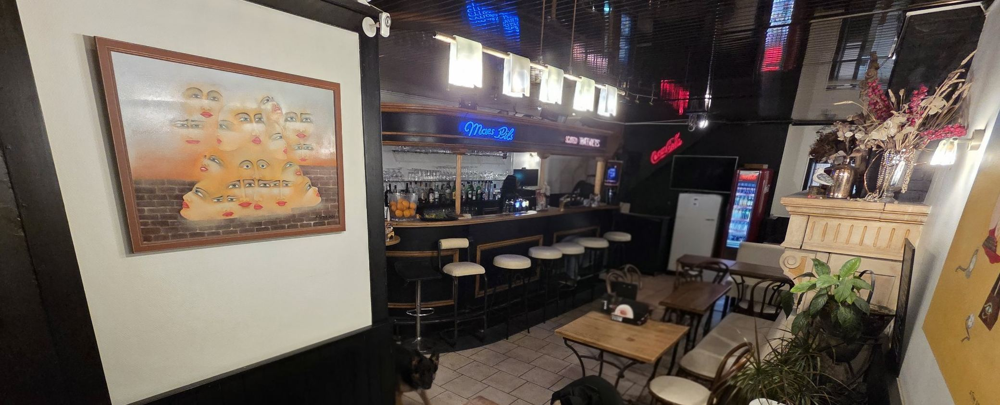
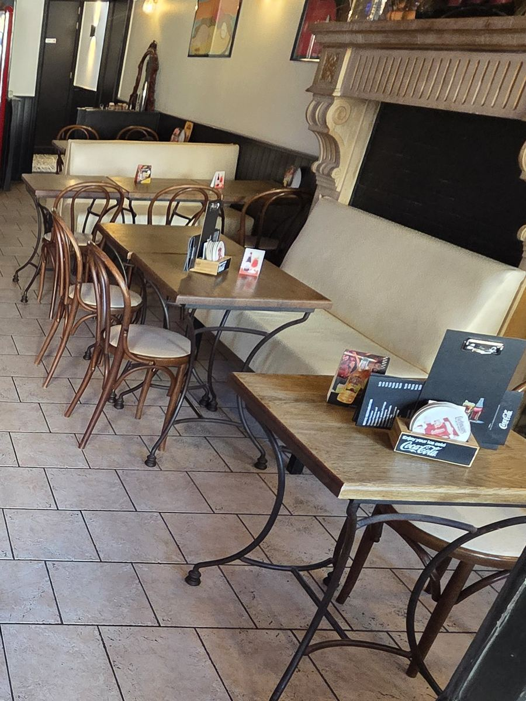

Un verre, une assiette généreuse, et on prend son temps.
- Petite restauration non-stop
- Face à l’église de Wavre
- Jusqu’à 2h le week-end

Un verre, une assiette généreuse, et on prend son temps.




La carte
Petite restauration servie non-stop : les classiques bien faits, et de temps en temps un plat mijoté quand le chef s’y met.
Toujours à la carte
De temps en temps, tant qu’il y en a
Du café au dernier verre
Le plat du moment est annoncé au bar et sur notre page Google.
Horaires
| Du dimanche au jeudi | jusqu’à 1h |
|---|---|
| Vendredi, samedi et veilles de jours fériés | jusqu’à 2h |
Horaires exceptionnels annoncés sur notre fiche Google.
Accès